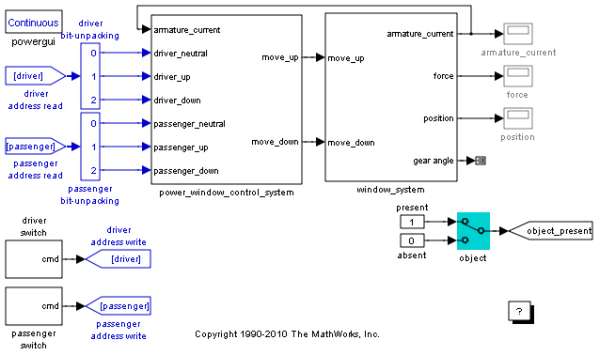

CAN 通信を使った Simulink® パワー ウィンドウ コントローラー
窓の動きを制御するコマンドは、通常、コントローラー エリア ネットワーク (CAN) を介して伝達されます。 このモデルには、車両のセンター コンソールに配置でき、コマンドを生成するスイッチが含まれています。
このパワー ウィンドウ デモを実行するには、SimMechanics™ と SimPowerSystems™、Signal Processing Blockset™、Simulink® Fixed Point™、xPC Target™ をインストールしなければなりません。
